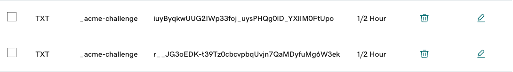

Let’s Encrypt로 무료 SSL 인증서 발급받기
아래는 dns-manual-mode로 SSL 인증서를 발급하는 방법입니다.
-
프로젝트 클론후 설치합니다.
- 본인 메일 주소로 변경하여 실행합니다.
git clone https://github.com/acmesh-official/acme.sh.git cd ./acme.sh ./acme.sh --install -m my@example.com -
재접속하거나, 지금 세션에서 아래 명령을 실행합니다.
source ~/.bashrc -
기본 인증서 발급기관을 letsencrypt로 설정합니다.
acme.sh --set-default-ca --server letsencrypt -
사용할 도메인에 대한 인증서 발급 명령을 실행합니다. RSA2048 키 형식으로 만듭니다.
acme.sh --issue --force --keylength 2048 -d thekoguryo.xyz -d '*.thekoguryo.xyz' --dns --yes-I-know-dns-manual-mode-enough-go-ahead-please-
실행예시
$ acme.sh --issue --force --keylength 2048 -d thekoguryo.xyz -d '*.thekoguryo.xyz' --dns --yes-I-know-dns-manual-mode-enough-go-ahead-please [Fri Jan 19 02:51:04 GMT 2024] Using CA: https://acme-v02.api.letsencrypt.org/directory [Fri Jan 19 02:51:04 GMT 2024] Create account key ok. [Fri Jan 19 02:51:04 GMT 2024] Registering account: https://acme-v02.api.letsencrypt.org/directory [Fri Jan 19 02:51:07 GMT 2024] Registered [Fri Jan 19 02:51:07 GMT 2024] ACCOUNT_THUMBPRINT='naWc9dOtc4HQw_Ftb8H4UojHkYIN_GI4EpbIJ7oV1aQ' [Fri Jan 19 02:51:07 GMT 2024] Creating domain key [Fri Jan 19 02:51:07 GMT 2024] The domain key is here: /home/opc/.acme.sh/thekoguryo.xyz/thekoguryo.xyz.key [Fri Jan 19 02:51:07 GMT 2024] Multi domain='DNS:thekoguryo.xyz,DNS:*.thekoguryo.xyz' [Fri Jan 19 02:51:07 GMT 2024] Getting domain auth token for each domain [Fri Jan 19 02:51:09 GMT 2024] Getting webroot for domain='thekoguryo.xyz' [Fri Jan 19 02:51:09 GMT 2024] Getting webroot for domain='*.thekoguryo.xyz' [Fri Jan 19 02:51:09 GMT 2024] Add the following TXT record: [Fri Jan 19 02:51:09 GMT 2024] Domain: '_acme-challenge.thekoguryo.xyz' [Fri Jan 19 02:51:09 GMT 2024] TXT value: 'r__JG3oEDK-t39Tz0cbcvpbqUvjn7QaMDyfuMg6W3ek' [Fri Jan 19 02:51:09 GMT 2024] Please be aware that you prepend _acme-challenge. before your domain [Fri Jan 19 02:51:09 GMT 2024] so the resulting subdomain will be: _acme-challenge.thekoguryo.xyz [Fri Jan 19 02:51:09 GMT 2024] Add the following TXT record: [Fri Jan 19 02:51:09 GMT 2024] Domain: '_acme-challenge.thekoguryo.xyz' [Fri Jan 19 02:51:09 GMT 2024] TXT value: 'iuyByqkwUUG2IWp33foj_uysPHQg0lD_YXlIM0FtUpo' [Fri Jan 19 02:51:09 GMT 2024] Please be aware that you prepend _acme-challenge. before your domain [Fri Jan 19 02:51:09 GMT 2024] so the resulting subdomain will be: _acme-challenge.thekoguryo.xyz [Fri Jan 19 02:51:09 GMT 2024] Please add the TXT records to the domains, and re-run with --renew. [Fri Jan 19 02:51:09 GMT 2024] Please add '--debug' or '--log' to check more details. [Fri Jan 19 02:51:09 GMT 2024] See: https://github.com/acmesh-official/acme.sh/wiki/How-to-debug-acme.sh
-
-
DNS 서버에서 TXT value 2개를 등록합니다.
-
GoDaddy 기준 설정화면 예시

-
-
반영될 때까지 시간이 걸릴 수 있습니다. 아래와 같이 nslookup으로 잘 조회되는 지 확인합니다.
$ nslookup -q=TXT _acme-challenge.thekoguryo.xyz 8.8.8.8 Server: 8.8.8.8 Address: 8.8.8.8#53 Non-authoritative answer: _acme-challenge.thekoguryo.xyz text = "r__JG3oEDK-t39Tz0cbcvpbqUvjn7QaMDyfuMg6W3ek" _acme-challenge.thekoguryo.xyz text = "iuyByqkwUUG2IWp33foj_uysPHQg0lD_YXlIM0FtUpo" Authoritative answers can be found from: -
--renew옵션으로 변경하여 다시 명령을 실행합니다.acme.sh --renew --force --keylength 2048 -d thekoguryo.xyz -d '*.thekoguryo.xyz' --dns --yes-I-know-dns-manual-mode-enough-go-ahead-please-
실행예시
$ acme.sh --renew --force --keylength 2048 -d thekoguryo.xyz -d '*.thekoguryo.xyz' --dns --yes-I-know-dns-manual-mode-enough-go-ahead-please [Fri Jan 19 06:24:31 GMT 2024] Renew: 'thekoguryo.xyz' [Fri Jan 19 06:24:31 GMT 2024] Renew to Le_API=https://acme-v02.api.letsencrypt.org/directory [Fri Jan 19 06:24:32 GMT 2024] Using CA: https://acme-v02.api.letsencrypt.org/directory [Fri Jan 19 06:24:32 GMT 2024] Multi domain='DNS:thekoguryo.xyz,DNS:*.thekoguryo.xyz' [Fri Jan 19 06:24:32 GMT 2024] Getting domain auth token for each domain [Fri Jan 19 06:24:37 GMT 2024] Getting webroot for domain='thekoguryo.xyz' [Fri Jan 19 06:24:37 GMT 2024] Getting webroot for domain='*.thekoguryo.xyz' [Fri Jan 19 06:24:37 GMT 2024] thekoguryo.xyz is already verified, skip dns-01. [Fri Jan 19 06:24:37 GMT 2024] *.thekoguryo.xyz is already verified, skip dns-01. [Fri Jan 19 06:24:37 GMT 2024] Verify finished, start to sign. [Fri Jan 19 06:24:37 GMT 2024] Lets finalize the order. [Fri Jan 19 06:24:37 GMT 2024] Le_OrderFinalize='https://acme-v02.api.letsencrypt.org/acme/finalize/1524070066/237786255586' [Fri Jan 19 06:24:38 GMT 2024] Downloading cert. [Fri Jan 19 06:24:38 GMT 2024] Le_LinkCert='https://acme-v02.api.letsencrypt.org/acme/cert/03b685e226b8521bdf8977e4cc035dac7422' [Fri Jan 19 06:24:40 GMT 2024] Cert success. -----BEGIN CERTIFICATE----- MIIE+jCCA+KgAwIBAgISA7aF4ia4UhvfiXfkzANdrHQiMA0GCSqGSIb3DQEBCwUA MDIxCzAJBgNVBAYTAlVTMRYwFAYDVQQKEw1MZXQncyBFbmNyeXB0MQswCQYDVQQD ... hA7GiPNNlsUstWgukWV34Wd1Mqs8dp4kxgwnAI/mj1BHtmNDd28A1LcQ2f5rxRIe eruG9RUuH660Qlj+QcW17F6xecfSvCYNpFJgcLeU6qzbG7j3LYWCChZmSYoFek8T Te/oNN70XGG4lPSBz/HkNEYyKBRktFGTVkGJzxk0 -----END CERTIFICATE----- [Fri Jan 19 06:24:40 GMT 2024] Your cert is in: /home/opc/.acme.sh/thekoguryo.xyz/thekoguryo.xyz.cer [Fri Jan 19 06:24:40 GMT 2024] Your cert key is in: /home/opc/.acme.sh/thekoguryo.xyz/thekoguryo.xyz.key [Fri Jan 19 06:24:40 GMT 2024] The intermediate CA cert is in: /home/opc/.acme.sh/thekoguryo.xyz/ca.cer [Fri Jan 19 06:24:40 GMT 2024] And the full chain certs is there: /home/opc/.acme.sh/thekoguryo.xyz/fullchain.cer
-
-
알려준 위치를 확인해 보면, 아래와 같이 생성된 인증서를 볼 수 있습니다.
$ ls -la /home/opc/.acme.sh/thekoguryo.xyz total 32 drwxrwxr-x. 2 opc opc 177 Jan 19 06:24 . drwx------. 7 opc opc 153 Jan 19 06:24 .. -rw-rw-r--. 1 opc opc 3751 Jan 19 06:24 ca.cer -rw-rw-r--. 1 opc opc 5536 Jan 19 06:24 fullchain.cer -rw-rw-r--. 1 opc opc 1785 Jan 19 06:24 thekoguryo.xyz.cer -rw-rw-r--. 1 opc opc 618 Jan 19 06:24 thekoguryo.xyz.conf -rw-rw-r--. 1 opc opc 1025 Jan 19 06:24 thekoguryo.xyz.csr -rw-rw-r--. 1 opc opc 208 Jan 19 06:24 thekoguryo.xyz.csr.conf -rw-------. 1 opc opc 1679 Jan 19 06:24 thekoguryo.xyz.key- certificate: thekoguryo.xyz.cer
- private key: thekoguryo.xyz.key
- intermediate CA cert: ca.cer
- full chain certs: fullchain.cer
이 글은 개인으로서, 개인의 시간을 할애하여 작성된 글입니다. 글의 내용에 오류가 있을 수 있으며, 글 속의 의견은 개인적인 의견입니다.